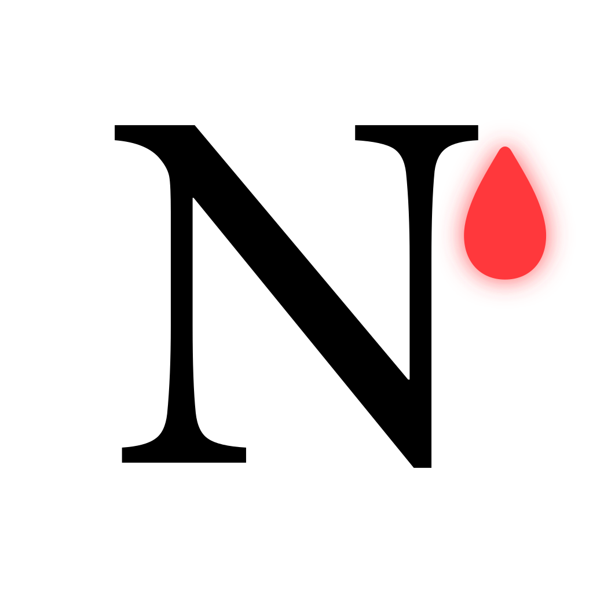
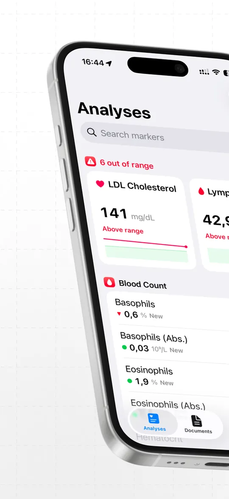
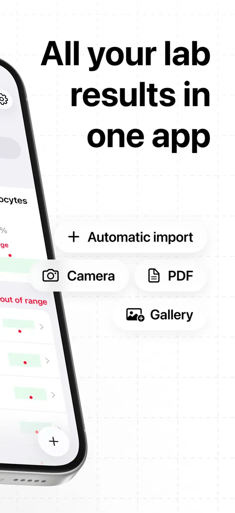
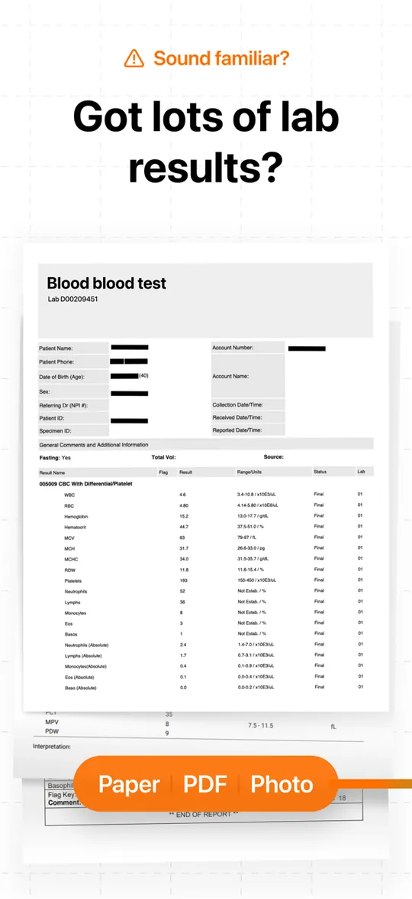
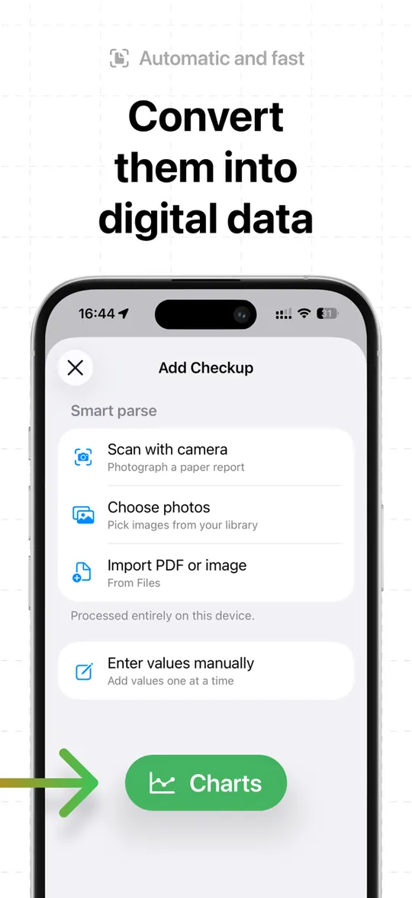
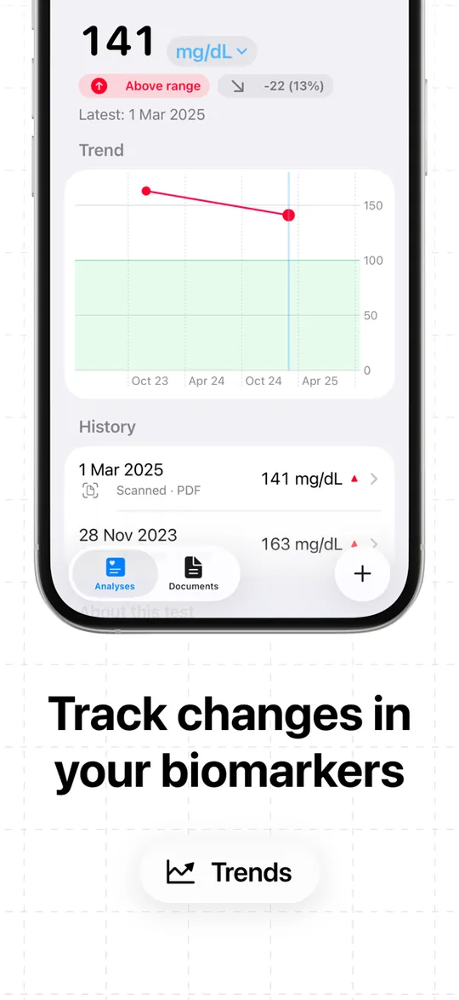
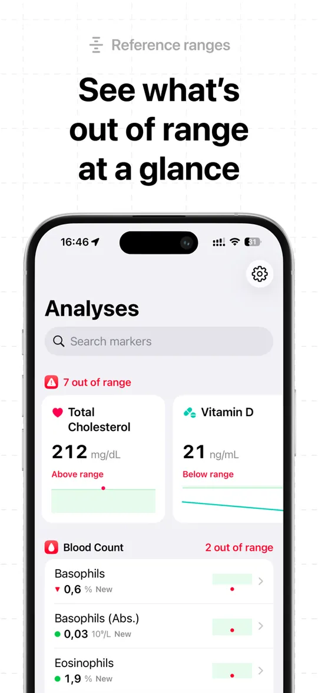
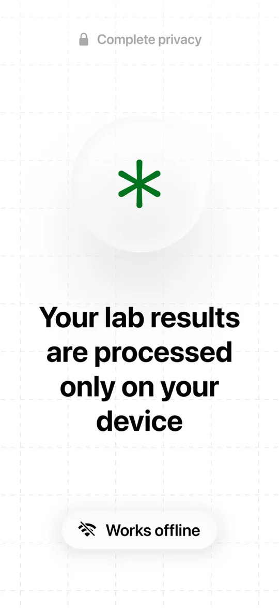
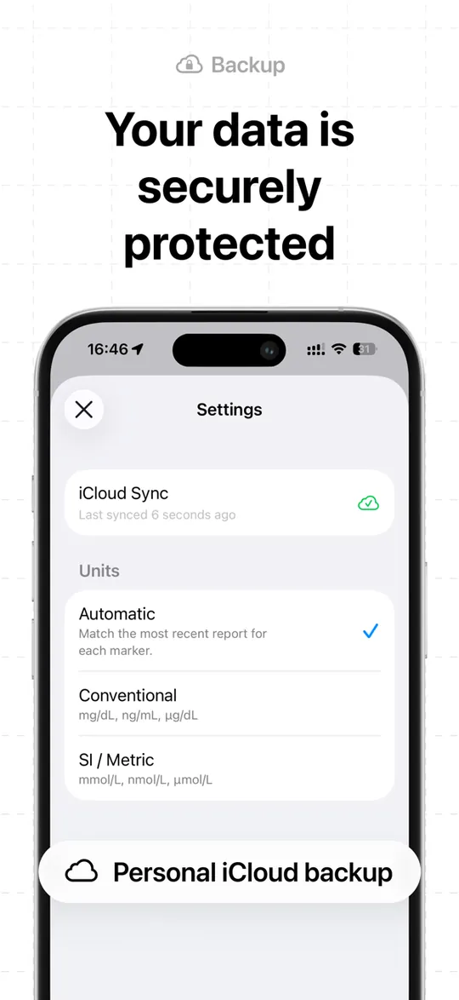

Norma
On-device lab report scanner for iPhone.
Still here? This app is holding the App Store link inside its own browser. Open this page in your browser instead:
- Tap ••• in the top-right corner.
- Choose Open in browser.
- Tap Get Norma on the App Store again.








What is Norma. Norma reads your lab reports (photo or PDF) entirely on your iPhone and charts how every biomarker trends between checkups.
Privacy. Norma has no servers and collects no data. See the privacy policy.
Support
Questions, bug reports, or ideas? Please Contact